In China Employee Termination: Pulse Incident-Map Brief for Foreign Employers (2026 Hourly Run)
Key takeaways
- Foreign employers in China should treat termination breakdowns as incidents that require fast containment, not slow commentary.
- Incident mapping helps teams move from vague risk talk to concrete containment actions.
- The biggest incident driver remains coherence failure across legal route, evidence, communication, and settlement.
- Payroll and IIT uncertainty can become incident-level exposure if left unresolved near release.
- Legal depth is important, but incident response discipline determines practical outcomes.
Pulse opener: when risk appears, containment speed matters
In cross-border China operations, termination risk often appears as a chain of small failures rather than one dramatic error. A route assumption stays fuzzy, HR wording drifts, payroll asks unresolved questions, and local caveats go undocumented. None of these alone looks fatal, but together they create an incident that can destabilize the case.
This run rotates to an incident-map format so foreign operators can identify incident types quickly and apply the right containment move. The objective is practical: reduce time-to-control when quality signals deteriorate.
Plain-language legal context first
China termination is generally route-based under labor law and implementation regulations. In disputes, defensibility often depends on whether the employer can show that process behavior and records stayed consistent with the chosen legal route.
For foreign teams, this means incident response should prioritize coherence restoration before release progression.
Incident map: 7 high-frequency incidents and containment moves
Incident 1 — Route confidence collapse
Risk signal: legal route shifts late or remains partially defined.
Impact: downstream teams execute against moving assumptions.
Containment move: immediate legal route reset memo + pause on communications.
Incident 2 — Evidence ownership gap
Risk signal: critical documents exist but no accountable owner can verify completeness.
Impact: weak defensibility if challenged.
Containment move: evidence index reconstruction (owner/source/status) before release.
Incident 3 — Narrative drift incident
Risk signal: legal and HR language diverges after approval.
Impact: contradictory records and elevated dispute leverage.
Containment move: freeze communication package; reconcile one master narrative and re-approve.
Incident 4 — Settlement ambiguity incident
Risk signal: payroll/tax treatment remains open near payroll cutoff.
Impact: settlement errors that amplify legal and employee-relations exposure.
Containment move: joint legal-payroll sign-off; delay release if material assumptions unresolved.
Incident 5 — Local uncertainty incident
Risk signal: city-level concern flagged informally without decision owner.
Impact: hidden variance risk in cross-border approvals.
Containment move: formal uncertainty memo with options, exposure range, and deadline owner.
Incident 6 — Escalation deadlock incident
Risk signal: case sits in unresolved escalation with no time-bound decision.
Impact: governance drag, rushed late decisions, and degraded controls.
Containment move: assign executive decision deadline and fallback resolution path.
Incident 7 — Closure integrity incident
Risk signal: case marked complete without retrieval test.
Impact: poor dispute response readiness.
Containment move: reopen closure status; run retrieval validation and remediate archive gaps.
Practical implications for foreign operators
Incident mapping improves cross-functional execution because each risk pattern has a predefined response. Teams no longer spend hours deciding whether a problem is “serious enough.” They identify incident type, trigger the containment move, and report status using consistent labels.
For foreign leadership, incident labels also improve transparency. Reporting can show incident mix, containment speed, and closure quality, rather than generic “case progressing” updates.
Operations module
A) SOP by role ownership
Legal: own route integrity incidents and legal-risk containment logic.
HR: own communication and chronology incidents.
Payroll: own settlement/tax incidents and release readiness controls.
Manager: own adherence to approved messaging boundaries.
Vendor/EOR: own handoff continuity and unresolved incident visibility.
B) Document checklist and incident gates
Required artifacts:
- route-confidence memo,
- evidence ownership index,
- aligned communication pack,
- settlement worksheet + tax notes,
- timestamped decision log,
- archive map + retrieval owner.
Gate logic:
- no release with open high-impact incidents,
- all containment actions need owner/date,
- closure requires retrieval pass regardless of prior status.
C) Exception pathways
Pathway A: route incident unresolved → legal-led pause and governance escalation.
Pathway B: evidence incident unresolved → hold until ownership closed.
Pathway C: settlement incident unresolved → payroll/legal joint decision required.
Pathway D: local uncertainty incident unresolved → escalation with option pack.
Pathway E: closure incident unresolved → reopen and remediate before final close.
D) System controls and audit fields
Suggested fields:
incident_typeincident_severitycontainment_ownercontainment_deadlinecontainment_statusrelease_block_flagclosure_retrieval_pass
Control standards:
- auto-block release for unresolved high-impact incidents,
- immutable logs for incident-state transitions,
- monthly incident trend review by type and cycle time.
Common mistakes and prevention
Mistake: labeling issues without containment ownership
Prevention: every incident must have owner + deadline.
Mistake: reopening timeline pressure before containment closes
Prevention: keep release block active until incident criteria are met.
Mistake: treating settlement ambiguity as minor
Prevention: classify unresolved material payroll/tax assumptions as high-impact incidents.
Mistake: informal local caveats
Prevention: require documented local uncertainty incident record.
Mistake: weak closure controls
Prevention: retrieval-test pass mandatory before closure.
What to watch next
Foreign operators should track incident recurrence by type and location. Repeated narrative-drift or settlement incidents usually indicate systemic process weaknesses that need redesign, not case-by-case patching. They should also monitor containment cycle time; slower containment is often a leading indicator of rising dispute exposure.
Incident command rhythm and closure SLA
For multinational teams, incident maps work best when paired with a clear command rhythm. A practical pattern is two-step: (1) immediate containment call to assign incident owner and release-block status, then (2) closure review to verify that containment criteria are actually met. Without this rhythm, incidents can appear closed in chat while underlying control gaps remain open in systems.
Closure SLAs should be explicit by incident severity. High-impact incidents should have same-day containment confirmation, with follow-up closure evidence logged in the case record. Medium-impact incidents can use next-business-day closure targets, but should auto-escalate if deadlines are missed. This keeps containment quality measurable and avoids silent backlog buildup.
FAQ
Is incident mapping legal advice?
No. It is an operational containment framework informed by legal and practitioner sources.
Which incidents are usually most expensive?
Narrative drift and settlement ambiguity incidents typically carry high downstream cost.
Can small teams apply this model?
Yes. Start with incident type, owner, deadline, and release-block status.
When should leadership be notified?
Immediately for high-impact incidents or when containment deadline is missed.
Does this replace local counsel?
No. It complements local legal/payroll guidance with structured response controls.
Is this model applicable across all China locations?
Baseline incident logic is broad, but local practice differences still matter.
Legal appendix (secondary depth)
1) Core legal anchors
The PRC Labor Contract Law and implementation regulations provide legal framework for termination routes and obligations. SPC interpretations provide labor-dispute application context.
2) Practitioner and market synthesis
Practitioner sources emphasize route coherence and process discipline. Market/payroll context reinforces settlement and tax handling as practical legal-risk interfaces.
3) Residual uncertainty
City-level variance and language nuance can affect edge-case outcomes; material cases require localized professional advice.
Source-fit note for this run
This run maintained required source mix and rotated to incident-map framing for stronger Pulse-style actionability. Repetitive escalation-level language was replaced by incident-type containment guidance.
Disclaimer
This content is informational only and does not constitute legal, tax, payroll, accounting, or compliance advice. Employers should seek qualified local professional advice for case-specific decisions.
Sources
- National People's Congress. Labor Contract Law of the PRC (English text). Accessed 2026-02-28: http://www.npc.gov.cn/zgrdw/englishnpc/Law/2007-12/13/content_1384064.htm
- State Council. Implementation Regulations of the Labor Contract Law (Decree No. 535). Accessed 2026-02-28: https://www.gov.cn/gongbao/content/2008/content_1124615.htm
- Supreme People's Court. Interpretation (I) on Application of Labor Dispute Law. Accessed 2026-02-28: https://www.court.gov.cn/fabu/xiangqing/243981.html
- China Briefing. Employee Termination in China. Updated 2025-10-17, accessed 2026-02-28: https://www.china-briefing.com/news/employee-termination-in-china/
- Littler. Key Recent Developments in China's Employment Law. Published 2024-03-20, accessed 2026-02-28: https://www.littler.com/news-analysis/asap/key-recent-developments-chinas-employment-law-china-us-comparative-perspective
- PwC. PRC Individual Taxes on Personal Income (Tax Summaries). Accessed 2026-02-28: https://taxsummaries.pwc.com/peoples-republic-of-china/individual/taxes-on-personal-income
Need local employment support in China?
If you need a compliance-first partner for hiring, payroll, and risk controls in China, China-Payroll.com can help evaluate the right setup.
Image Prompt Pack
Create a 16:9 hero image for article title: 'In China Employee Termination: Pulse Incident-Map Brief for Foreign Employers (2026 Hourly Run)'. Scene: global operations team evaluating workforce model options for China market entry. Include motifs: decision mat…